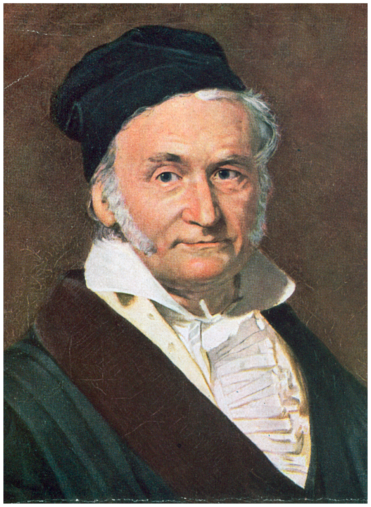
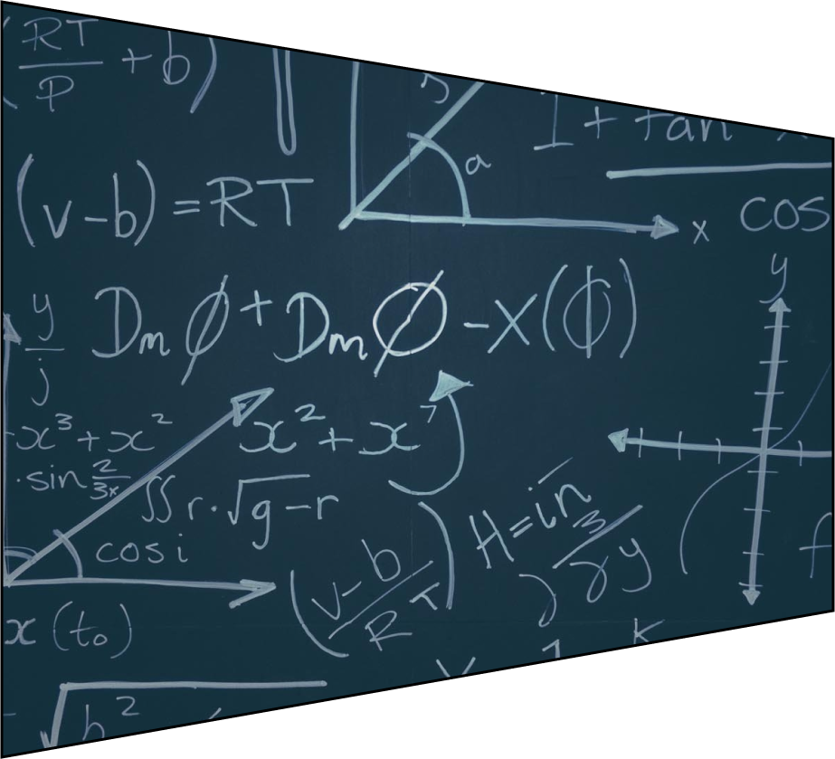

Виктор Александрович Постнов родился 24 апреля 1935 года в г. Артемовске Донецкой области. Закончил Самарский инженерно-строительный институт по специальности инженер гидростроитель. Математику всегда любил. Не имея специального математического образования, умел находить и показать красоту решения сложных задач. Когда его дети обучались в школе, вел совместно с преподавателем математики Уголок факультатива для учеников. Старался находить нестандартные решения, несколько их возможных вариантов и такие способы подачи, чтобы заинтересовать школьников математикой. Поводом для создания серии собственных задач, которые представлены на данном сайте, для Виктора Александровича послужила, к сожалению, полная потеря зрения. Не имея возможности знакомиться с задачами чужими, автор начал создавать собственные. В процессе их создания пришлось переосмысливать подходы к решению, искать более профессиональные методы. По словам самого автора — для него это был мощный толчок к самообразованию и даже созданию новых параметров вычислительных приемов. Все задачи и их решение возникали и хранились у автора только в памяти, поскольку записать самостоятельно из-за потери зрения он их не мог. Мы взяли на себя смелость эти труды записать и опубликовать. Уважаемые любители математики! Надеемся, что авторские задачи Постнова Виктора Александровича заинтересуют вас. Как для любого автора, Виктору Александровичу важна обратная связь. Все вопросы, пожелания, отзывы вы можете написать...... Он будет рад любому отклику и обязательно всем ответит.
Математику уже затем учить надо,
что она ум в порядок приводит
М.Ломоносов
